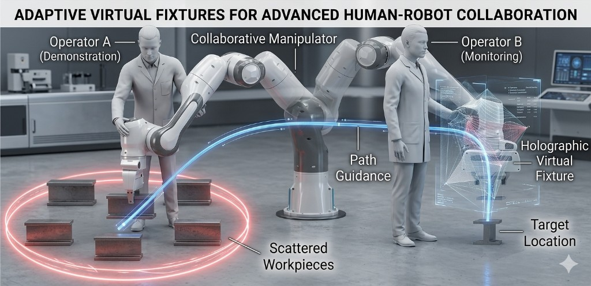
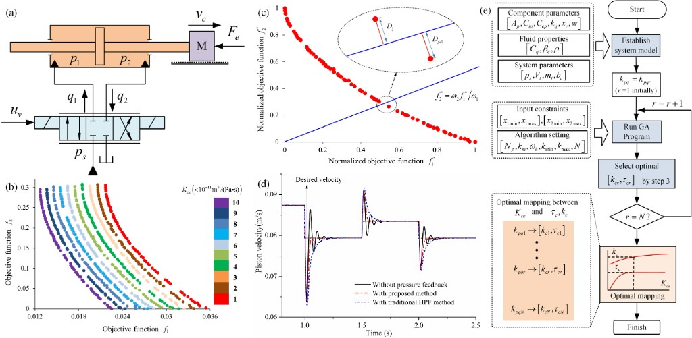
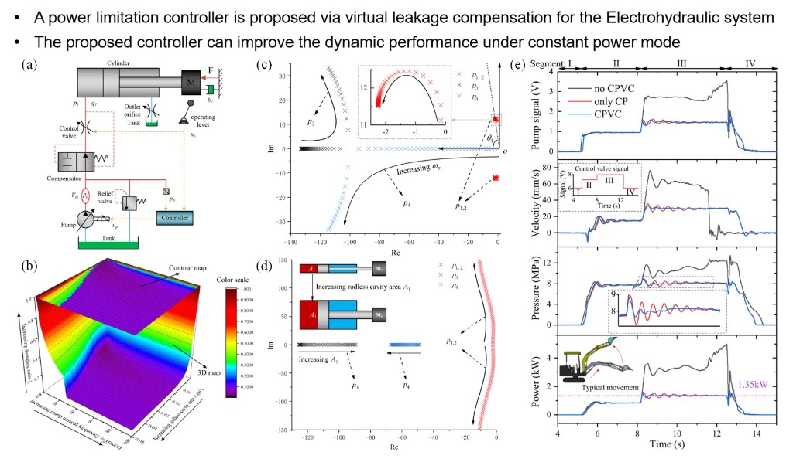
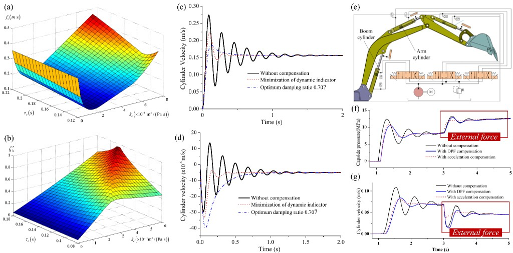

Video
OmniUMI
About
I am Shaqi Luo, working at the Beijing Academy of Artificial Intelligence (BAAI) in embodied intelligence research. My work focuses on interactive whole-body VLA, with interests spanning embodied intelligence, variable impedance control, multimodal interaction, and whole-body control.
This homepage serves as a central place to share my research, publications, and project updates.
News
- 04 / 2026 Launched this research homepage (GitHub Pages).
- 03 / 2026 Update this section with recent talks, paper acceptances, and releases.
Selected Works
Video
Thor

Image
THMS 2025
Video
TMech 2022
Human–Robot Shared Control Based on Locally Weighted Intent Prediction for a Teleoperated Hydraulic Manipulator System
IEEE/ASME Transactions on Mechatronics · 2022 · 27(6): 4462–4474 · First author
Contribution: scientific question, method, experiments, analysis, writing & submission.

Image
AMM 2021
Image
FME 2025
Video
UltraBot
Publications
Full list: Google Scholar.
OmniUMI: Towards Physically Grounded Robot Learning via Human-Aligned Multimodal Interaction
arXiv · 2026
Towards expert-level autonomous carotid ultrasonography with large-scale learning-based robotic system
Nature Communications · 2025 · SCI (IF=15.7, CAS Q1, Top)
Adaptive Virtual Fixture Based on Learning Trajectory Distribution for Comanipulation Tasks
IEEE Transactions on Human-Machine Systems · 2025 · SCI (IF=4.4, CAS Q2)
Smooth trajectory learning of teleoperated hydraulic manipulator with motion noise cancellation
Frontiers of Mechanical Engineering · 2025 · SCI (IF=4.7, CAS Q2)
UltraSeP: Sequence-aware pre-training for echocardiography probe movement guidance
Pattern Recognition · 2025 · SCI (IF=7.6, CAS Q1, Top)
Cardiac Copilot: Automatic probe guidance for echocardiography with world model
MICCAI · 2024 · Oral Presentation
A unified interaction control framework for safe robotic ultrasound scanning with human-intention-aware compliance
IROS · 2024 · Oral · IEEE RAS flagship conference
Vision-based detection and real-time adaptive control schemes for autonomous ultrasound scanning robots
ICARM · 2024 · Oral
Human–robot shared control based on locally weighted intent prediction for a teleoperated hydraulic manipulator system
IEEE/ASME Transactions on Mechatronics · 2022 · SCI (IF=7.3, CAS Q1, Top)
Dynamic impact of hydraulic systems using pressure feedback for active damping
Applied Mathematical Modelling · 2021 · SCI (IF=5.336, CAS Q1, Top) · * advisor first author & corresponding

Image
Access 2019
Dynamic analysis and improvement of the electrohydraulic system under power limitation control
IEEE Access · 2019 · SCI (IF=3.9, CAS Q3)

Image
AIM 2019
Comparison of acceleration control and pressure feedback for active damping improvement of hydraulic manipulators
AIM · 2019 · Oral · IEEE/ASME conference
Contact
- InstitutionBeijing Academy of Artificial Intelligence (BAAI)
- Emailluoshaqi@163.com
- Email (BAAI)luoshaqi@baai.ac.cn
-
WeChat
扫一扫上面的二维码图片，加我为朋友。
- Google Scholarscholar profile
- GitHubgithub.com/luoshaqi